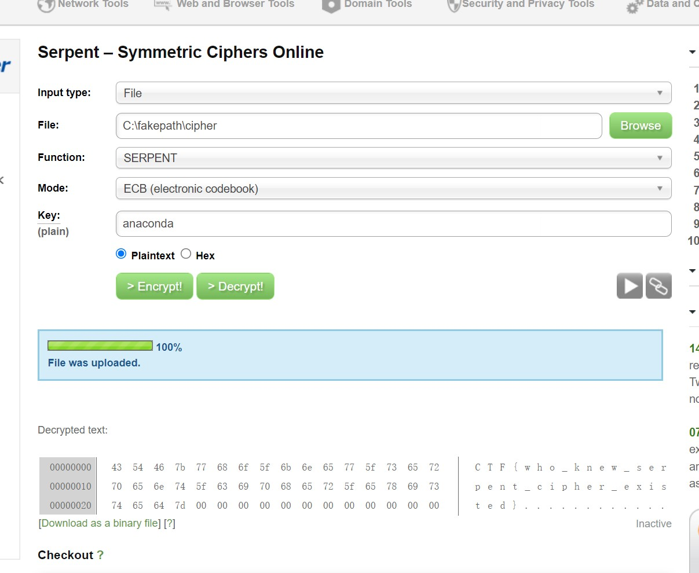

- 被劫持的神秘礼物
- 刷新过的图片
- snake
- [BJDCTF2020]认真你就输了
- [BJDCTF2020]藏藏藏
- 被偷走的文件
- [GXYCTF2019]佛系青年
- 菜刀666
- [BJDCTF2020]你猜我是个啥
- 梅花香之苦寒来
- 秘密文件
- [SWPU2019]神奇的二维码
- [BJDCTF2020]just_a_rar
- [BJDCTF2020]一叶障目
- [BJDCTF2020]鸡你太美
- 穿越时空的思念
被劫持的神秘礼物
1 | 某天小明收到了一件很特别的礼物，有奇怪的后缀，奇怪的名字和格式。小明找到了知心姐姐度娘，度娘好像知道这是啥，但是度娘也不知道里面是啥。。。你帮帮小明？找到帐号密码，串在一起，用32位小写MD5哈希一下得到的就是答案。 链接: https://pan.baidu.com/s/1pwVVpA5_WWY8Og6dhCcWRw 提取码: 31vk 注意：得到的 flag 请包上 flag{} 提交 |
这种题目，求账号密码，一般都是搜索username、password、pass、user还有就是login
md5加密
刷新过的图片
根据题目名，很明显可以想到f5图片隐写
然后在解伪加密
flag{96efd0a2037d06f34199e921079778ee}
snake
foremost解压出了一个zip，zip内解压出了一个cipher和key文件
key用base64解密。在根据解出的英语搜到了anaconda
去谷歌翻译snake，找到了同义词serpent
再去解密

flag{who_knew_serpent_cipher_existed}
[BJDCTF2020]认真你就输了
打开发现有问题，虽然是pk头。直接改为zip解压出来看所有的文件
在charts下找到flag.txt文件
flag{M9eVfi2Pcs#}
还有种把后缀修改为xlsx，就会提示是否修复，会自动修复。一样会给hint
[BJDCTF2020]藏藏藏
直接foremost分离了一个zip，zip解压出一个docx。扫码得flag
flag{you are the best!}
被偷走的文件
找到了个flag.rar文件，ftp-data里直接提出来
在常规爆破一下
flag{6fe99a5d03fb01f833ec3caa80358fa3}
[GXYCTF2019]佛系青年
盯着图片整了半天。。。。
虽然但是。。那个没解出来的文件是伪加密，解开之后之后
与佛论禅
菜刀666
过滤post找到了一个图片
图片上有字符串
再在其他流里找到压缩包
拿着上面图上的字符串解压缩包
flag{3OpWdJ-JP6FzK-koCMAK-VkfWBq-75Un2z}
[BJDCTF2020]你猜我是个啥
给了一个压缩包（不是），一张png图片。16进制最底下找到了flag
梅花香之苦寒来
在jpg文件底部找到好多数字，坐标，可以python转或者gnuplot
1 | from PIL import Image |
把他转成无括号，无逗号的形式。直接扔gnuplot里plot就可
1 | 7 7 |
flag{40fc0a979f759c8892f4dc045e28b820}
秘密文件
先在ftp协议里找到了下载了个rar文件，又在下面的包中发现了传输的rar文件，保存
爆破
flag{d72e5a671aa50fa5f400e5d10eedeaa5}
[SWPU2019]神奇的二维码
套娃小题罢了，binwalk了四个rar文件
4个rar，只涉及了base64，有个flag.doc文件，多解密几次得到密码再去解good.mp3。
然后在morse读出来转
flag{morseisveryveryeasy}